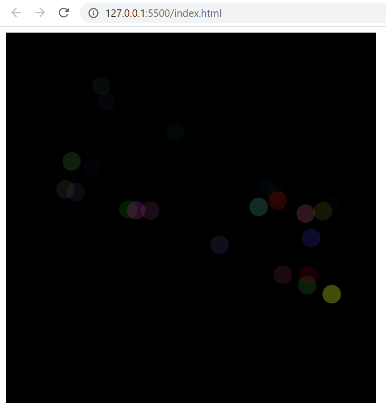
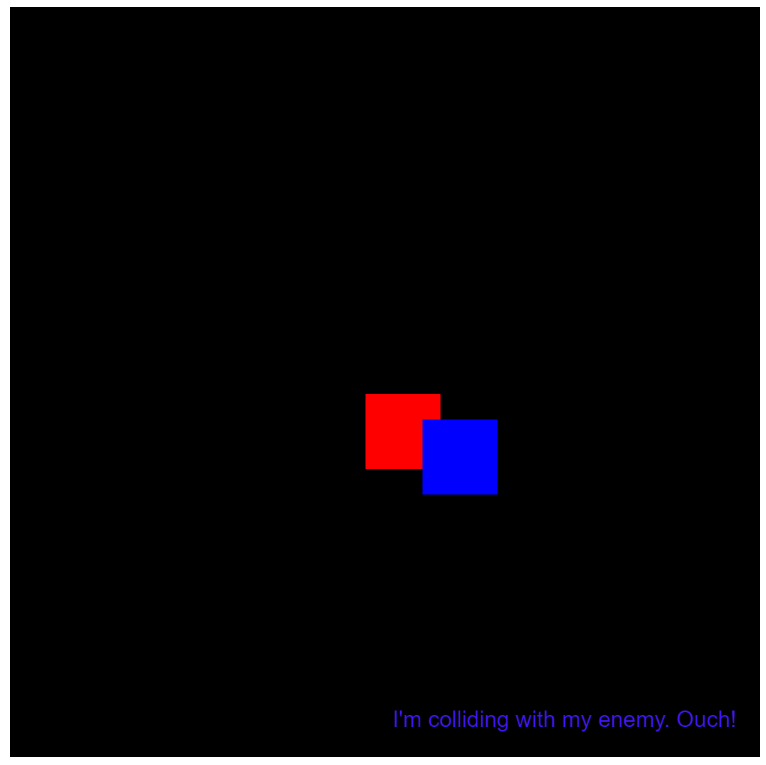

Anthony Manuel Pimentel
Portfolio
This is about me
Example #1

This was a project where we had to create a p5 that when we
clicked on the screen multiple colored and sized circles were
made and then afterwards they would disapear from the screen
Example #2

Example #3
clicked on the screen multiple colored and sized circles were
made and then afterwards they would disapear from the screen
I am a 17 year old Dominican & Puerto Rican who grew up in the projects living with a single
mother. I have a passion for dancing and computer technology which some think are two
opposite fields. Music and dance let me express myself and let me have fun and makes me happy
in any situation. Computer technology has peeked my interest due to the fact that is the way to
the future and things we can accomplish. Tech has been apart of all things that are apart of
this world and continues to evolve with new ways of internet service or robotic servants and
help within shopping markets or just the use of computer in coding. I see myself becoming an IT
worker or computer technician because i like helping people with problems concerning computer
technology. When it comes to dancing, I have alot of energy and I use it to my advantge ever since
I was young I was dancing my mom tells me. I love listening to Hip Hop and R&B that is what I started
with and I continue to dance to. In my school I am apart of two dance teams. One for Latin dance and
the other is House dance which is a mixture of different types of dances having to do with Hip Hop
reggae, soca, vogue, bboying, pop'n'locking and has stunts in it as well which is cool too. I am
happy to be apart of both of these dance teams as this wiil be my final year in highschool and I will
try to continue in College. I am a very sociable person and I have alot of couriousity and courage.
I do alot of crazy things that leave people in shock in a good way but I dont fear most things unless
it is paranormal activity then that is gonna jump scare the crap out of me. I dont really like movies
like that because it seems so unrealistic it leads your mind to dream and they end up plaguing your
which is a bad thing and can lead to multiple nightmares and that is something I don't like to have.
well this is a short bio about me and I hope I have your interest in the person I am.